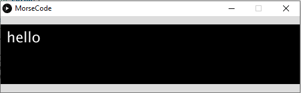

Morse code practice program
I wanted to share a programming project that I worked on a few years ago, but it's one that I think is worth sharing, because it does something neat.
The program is essentially a Morse code translator, but it does more than just take Morse code and translate it into alphanumeric letters. It allows you to "tap out" a Morse letter using a keyboard key and it directly translates that Morse letter into an alphabetical letter. I wrote this program a couple of years ago, because I wanted to learn Morse code to use a website called morsecode.me, which is an online Morse code chat room.
Like a lot of my programs, this is written in Processing, but the reason for this one being written in Processing is that Processing has built-in ready-to-go "interrupt" functions for doing things like detecting key presses and releases, and I already knew how to use it.
The way it works is pretty simple. When you press down a key, it starts a timer, and when you release that key, it stops the timer and adds the time to an index of the array, before advancing to the next index. When the enter key is pressed, the program knows that the current letter sequence is complete, and it begins processing the times. It finds the shortest time in the sequence, and then figures out what times are close to it. If these times are less than 100 milliseconds, they are considered as dots, and if not, they are considered as dashes. Then the sequence is matched with a corresponding sequence in a text file, which tells it which letter or number the sequence corresponds to. Then that letter is appended to the sequence of letters. This way you can practice tapping out larger Morse sequence and correct your own work as you go.

If you want to take a look at the code, it is hosted on this GitHub repository.